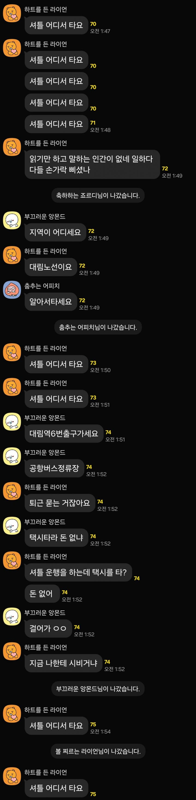
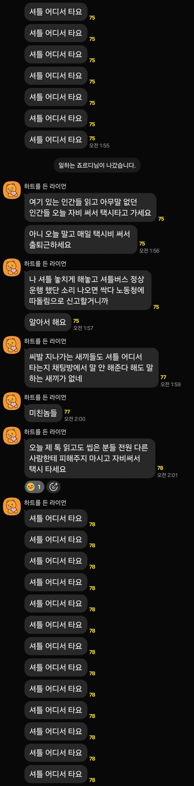
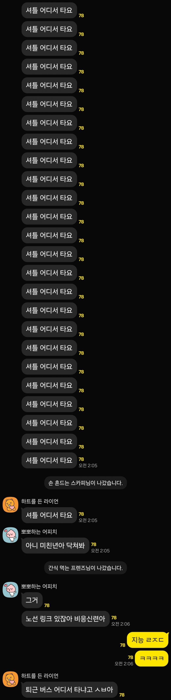
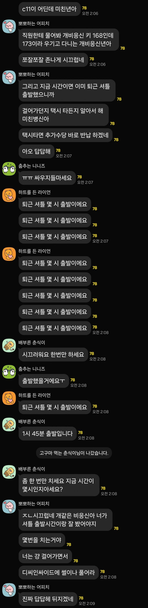
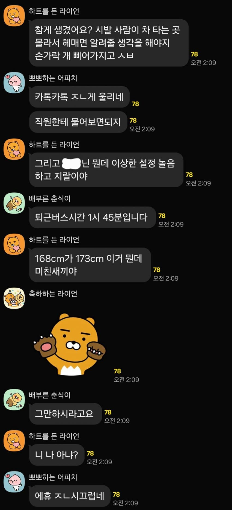
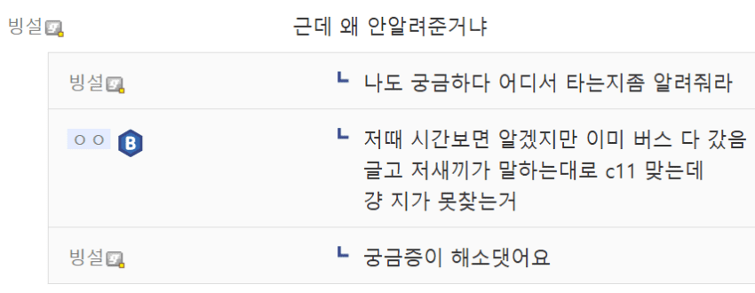

저런건 강퇴 못하냐?
됨 방장이 일안하는거
새벽1시 40분에 저러면 주딱도 자고 있을 듯 ㅋㅋ
주변 사람들에게 물어볼 생각을 못하나
해소댓서요
저걸 지피티에 쳐봤으면 존나 성실하게 알려줄텐데
셔틀 질문 하나에 드랍쉽 오버로드까지 나오는 거 개웃기네 ㅋㅋㅋ
셔틀 어디서 타요
앞뒤 다 자르고 질문하는 새끼들 개패고 싶음
셔틀에서 질럿이 안내려져요
20대 초에 멸치라서 운동 후 육체 테스트겸 쿠팡 허브 종종 갓는데
출퇴근이 저렇게 깽판칠정도인가...
정신병 무섭네
와 사람들 병먹금 개잘하네 ㅋㅋ
낄낄
마귀 들렸나봐
밥도 떠먹여줘야할듯
이래서 허들 낮은 직업 ㅈㄴ 무서움 ㅋㅋ

ㅋㅋㅋㅋㅋㅋㅋ 진짜 쏘시오패스 병신새끼네
첫 카톡이 1시47분이 맞다면 저 병신은 진짜 어디서 타냐고 묻는게 아닐수도..
중간 짤에서 링크보고 c11인건 알고있는데 출발 시간은 모르는게 말이안되잖아
기다려달라거나 돌아와달라는 의도로 저지랄하는것같다는 생각이 드네
그냥 지 책임져줄 호구 찾는거같은데?
ㄹㅇ
나이더스 커널 타고 오세요
모자란친군가 목적지는 말하고 물어보지. 여태껏 떼쓰면 다해줬나보네
그럼 "이미 셔틀가서 없어요 담장자한테 물어보세요" 하면되지 아무도 답 안해주네 ㅋㅋㅋㅋㅋ
저사람이 깝깝이인건 이해하지만 모르는거같은데 대답 좀 해줘라 ㅅㅂㅋㅋㅋㅋㅋㅋㅋㅋㅋ
1분만에 5번 똑같은말 묻는데 나같아도 절대 상대 안해준다 ㅋㅋㅋ
1시45분이라고 대답해주긴함...좀 늦었지만
새벽2시면 이미 다 퇴근버스에서 졸고있는거아니냐 80명있는 방 알람소리를 켜놓을리도 없고
유튜브라도 보고잇던 사람은 알림창보고 와서 이미 다 나갔네
병신맞음
그냥 지나가는 사람 잡고 물어만봐도 알수있는건데 ㅋㅋㅋㅋ
지나가는 사람 잡고 물어봐도 안알려줬다고 써있긴 함
아 저기 어디냐? 나있었으면 에휴... 기다리세요 픽업 갈게요 써놓고 안갈텐데
새벽 1시 47분에 개지랄이네 비융신인가 ㅋㅋ
쿠팡센터 일용직으로 여러번 여러곳 가봤지만
대부분 센터는 버스 한 곳에 모여져있는데
고양센터는 5층, 3층, 1층인가 노선별로 층수 다르게해서 헷갈리긴함. 퇴근 어디 노선 몇층에서 타면된다고 용지 붙어있긴한데
내가 연장을 했어서 그런가 버스가 안보여서 층수 왕복하다 결국 자비로 버스타고 집갔던 적은 있음
고양센터 오후조 퇴근은 헬이긴하더라
예의없는 질문은 원래 병먹금이 유구한 전통임
저거 톡방 나가는 놈들 카톡신고하려고 나가는거임
셔플 어디서 춰요